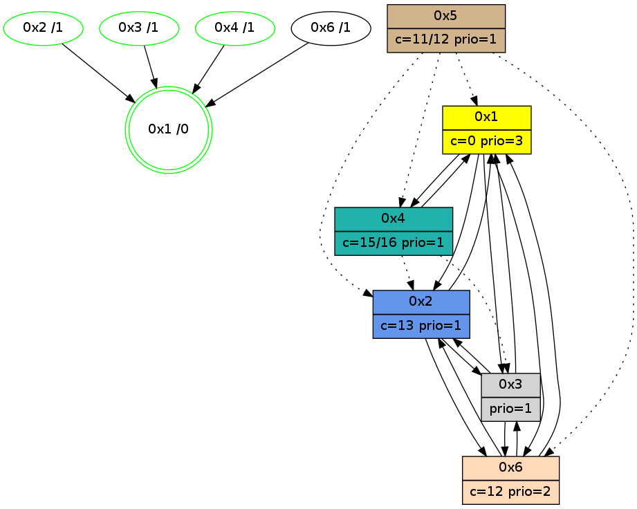

>> << IDX [start] -100 -25 -5 +0 +5 +25 +100 [1105.00044513]
 Previous packets
----------------------------------------------------------------------
1100.011455 beacon01(adaf) #0 coord=01,02,05,03,04,06 cycle=432.0ms assoc
-- color-indic=1 64 6a 82
1100.021416 beacon02(adaf) #0 coord=01,02,05,03,04,06 cycle=432.0ms assoc 64 3b 7d
1100.031416 beacon05(adaf) #0 coord=01,02,05,03,04,06 cycle=432.0ms assoc 64 9d 57
1100.041416 beacon03(adaf) #0 coord=01,02,05,03,04,06 cycle=432.0ms assoc 64 01 73
1100.051416 beacon04(adaf) #0 coord=01,02,05,03,04,06 cycle=432.0ms assoc 64 a7 59
1100.061416 beacon06(adaf) #0 coord=01,02,05,03,04,06 cycle=432.0ms assoc 64 d3 45
1100.073106 [Hello(6): seq=820 sym=2,1,3 sysInfo=hasWarning stat=2:12,3,6,1/1:10,12,3,0/3:13,3,1,11]
1100.076816 [Hello(2): seq=1393 sym=3,6,1 sysInfo=hasWarning stat=3:9,8,8,1/6:7,0,4,0/1:8,7,9,0]
1100.079355 [Hello(4): seq=907 sym=1,3 asym=2 sysInfo=hasWarning stat=1:7,8,10,0/3:13,15,1,3/2:0,3,1,1]
1100.082436 [Color(4) seq=188 @0:0 color=15/16 prio=1 c=0,7,c;1,4,6,8,9,b,d,e]
----------------------------------------------------------------------
1100.503563 beacon01(adaf) #0 coord=01,02,05,03,04,06 cycle=432.0ms assoc
-- color-indic=1 64 34 e3
1100.513526 beacon02(adaf) #0 coord=01,02,05,03,04,06 cycle=432.0ms assoc 64 65 1c
1100.523523 beacon05(adaf) #0 coord=01,02,05,03,04,06 cycle=432.0ms assoc 64 c3 36
1100.533525 beacon03(adaf) #0 coord=01,02,05,03,04,06 cycle=432.0ms assoc 64 5f 12
1100.543524 beacon04(adaf) #0 coord=01,02,05,03,04,06 cycle=432.0ms assoc 64 f9 38
1100.553526 beacon06(adaf) #0 coord=01,02,05,03,04,06 cycle=432.0ms assoc 64 8d 24
1100.565260 [Hello(3): seq=906 sym=6,2,1 sysInfo=hasWarning stat=6:2,2,7,4/2:2,15,3,0/1:11,13,5,1]
1100.567800 [Color(2) seq=292 @0:0 color=13 prio=1 c=0,7,c,e,f;1,4,6,8,9,b]
1100.569427 [Hello(1): seq=808 sym=2,4,6,3 sysInfo=hasWarning,coloring-mode-on,ColoringModeRequestCalled stat=2:15,0,8,0/4:5,1,7,2/6:6,0,2,0/3:6,5,4,1]
1100.573854 [Color(1) seq=334 @0:0 color=0 prio=3 c=c,d,f;7,e]
----------------------------------------------------------------------
1100.995670 beacon01(adaf) #0 coord=01,02,05,03,04,06 cycle=432.0ms assoc
-- color-indic=1 64 f0 8c
1101.005630 beacon02(adaf) #0 coord=01,02,05,03,04,06 cycle=432.0ms assoc 64 a1 73
1101.015634 beacon05(adaf) #0 coord=01,02,05,03,04,06 cycle=432.0ms assoc 64 07 59
1101.025632 beacon03(adaf) #0 coord=01,02,05,03,04,06 cycle=432.0ms assoc 64 9b 7d
1101.035632 beacon04(adaf) #0 coord=01,02,05,03,04,06 cycle=432.0ms assoc 64 3d 57
1101.045632 beacon06(adaf) #0 coord=01,02,05,03,04,06 cycle=432.0ms assoc 64 49 4b
1101.057359 [Hello(2): seq=1394 sym=3,6,1 sysInfo=hasWarning stat=3:10,9,8,1/6:7,0,4,0/1:9,8,9,0]
1101.061836 [Hello(4): seq=908 sym=1,3 asym=2 sysInfo=hasWarning stat=1:8,9,10,0/3:14,15,1,3/2:0,4,1,1]
1101.065554 [Color(4) seq=189 @0:0 color=15/16 prio=1 c=0,7,c;1,4,6,8,9,b,d,e]
----------------------------------------------------------------------
1101.487780 beacon01(adaf) #0 coord=01,02,05,03,04,06 cycle=432.0ms assoc
-- color-indic=1 64 bc 3c
1101.497740 beacon02(adaf) #0 coord=01,02,05,03,04,06 cycle=432.0ms assoc 64 ed c3
1101.507742 beacon05(adaf) #0 coord=01,02,05,03,04,06 cycle=432.0ms assoc 64 4b e9
1101.517741 beacon03(adaf) #0 coord=01,02,05,03,04,06 cycle=432.0ms assoc 64 d7 cd
1101.527742 beacon04(adaf) #0 coord=01,02,05,03,04,06 cycle=432.0ms assoc 64 71 e7
1101.537741 beacon06(adaf) #0 coord=01,02,05,03,04,06 cycle=432.0ms assoc 64 05 fb
1101.549463 [Hello(3): seq=907 sym=6,2,1 sysInfo=hasWarning stat=6:2,2,7,4/2:2,0,3,0/1:12,14,5,1]
1101.551989 [Color(2) seq=293 @0:0 color=13 prio=1 c=0,7,c,e,f;1,4,6,8,9,b]
1101.555972 [Hello(1): seq=809 sym=2,4,6,3 sysInfo=hasWarning,coloring-mode-on,ColoringModeRequestCalled stat=2:0,0,8,0/4:5,2,7,2/6:6,0,2,0/3:6,6,4,1]
1101.558167 [STC(1) #0.188 new-neigh,tree-change,inconsistent-stability,stable,to-color d=0]
1101.562019 [Color(1) seq=335 @0:0 color=0 prio=3 c=c,d,f;7,e]
----------------------------------------------------------------------
1101.979888 beacon01(adaf) #0 coord=01,02,05,03,04,06 cycle=432.0ms assoc
-- color-indic=1 64 78 53
1101.989848 beacon02(adaf) #0 coord=01,02,05,03,04,06 cycle=432.0ms assoc 64 29 ac
1101.999849 beacon05(adaf) #0 coord=01,02,05,03,04,06 cycle=432.0ms assoc 64 8f 86
1102.009850 beacon03(adaf) #0 coord=01,02,05,03,04,06 cycle=432.0ms assoc 64 13 a2
1102.019850 beacon04(adaf) #0 coord=01,02,05,03,04,06 cycle=432.0ms assoc 64 b5 88
1102.029850 beacon06(adaf) #0 coord=01,02,05,03,04,06 cycle=432.0ms assoc 64 c1 94
1102.041747 [Hello(6): seq=822 sym=2,1,3 sysInfo=hasWarning stat=2:13,5,6,1/1:12,14,4,0/3:15,5,1,11]
1102.044745 [STC(6)->1 #0.188 new-neigh,tree-change,inconsistent-stability,to-color d=1]
1102.046281 [Hello(4): seq=909 sym=1,3 asym=2 sysInfo=hasWarning stat=1:9,10,11,0/3:15,15,1,3/2:0,5,1,1]
1102.049531 [Color(3) seq=204 @0:0 prio=1 c=0,d,f;7,c,e]
1102.053652 [STC(4)->1 #0.188 new-neigh,tree-change,inconsistent-stability,stable,to-color d=1]
1102.055927 [Color(4) seq=190 @0:0 color=15/16 prio=1 c=0,7,c;1,4,6,8,9,b,d,e]
1102.057818 [Hello(2): seq=1395 sym=3,6,1 sysInfo=hasWarning stat=3:11,10,8,1/6:7,0,4,0/1:10,9,10,0]
1102.062108 [STC(2)->1 #0.188 new-neigh,tree-change,inconsistent-stability,stable,to-color d=1]
----------------------------------------------------------------------
1102.471998 beacon01(adaf) #0 coord=01,02,05,03,04,06 cycle=432.0ms assoc
-- color-indic=1 64 35 54
1102.481958 beacon02(adaf) #0 coord=01,02,05,03,04,06 cycle=432.0ms assoc 64 64 ab
1102.491959 beacon05(adaf) #0 coord=01,02,05,03,04,06 cycle=432.0ms assoc 64 c2 81
1102.501958 beacon03(adaf) #0 coord=01,02,05,03,04,06 cycle=432.0ms assoc 64 5e a5
1102.511960 beacon04(adaf) #0 coord=01,02,05,03,04,06 cycle=432.0ms assoc 64 f8 8f
1102.521959 beacon06(adaf) #0 coord=01,02,05,03,04,06 cycle=432.0ms assoc 64 8c 93
1102.533687 [Hello(3): seq=908 sym=6,2,1 sysInfo=hasWarning stat=6:2,2,7,4/2:3,1,4,0/1:13,15,6,1]
1102.535954 [Hello(1): seq=810 sym=2,4,6,3 sysInfo=hasWarning,coloring-mode-on,ColoringModeRequestCalled stat=2:1,0,9,0/4:6,3,8,2/6:7,0,3,0/3:7,7,4,1]
1102.539403 [Color(1) seq=336 @0:0 color=0 prio=3 c=c,d,f;7,e]
1102.541613 [Color(2) seq=294 @0:0 color=13 prio=1 c=0,7,c,e,f;1,4,6,8,9,b]
----------------------------------------------------------------------
1102.964106 beacon01(adaf) #0 coord=01,02,05,03,04,06 cycle=432.0ms assoc
-- color-indic=1 64 f1 3b
1102.974067 beacon02(adaf) #0 coord=01,02,05,03,04,06 cycle=432.0ms assoc 64 a0 c4
1102.984068 beacon05(adaf) #0 coord=01,02,05,03,04,06 cycle=432.0ms assoc 64 06 ee
1102.994068 beacon03(adaf) #0 coord=01,02,05,03,04,06 cycle=432.0ms assoc 64 9a ca
1103.004068 beacon04(adaf) #0 coord=01,02,05,03,04,06 cycle=432.0ms assoc 64 3c e0
1103.014068 beacon06(adaf) #0 coord=01,02,05,03,04,06 cycle=432.0ms assoc 64 48 fc
1103.025792 [Hello(2): seq=1396 sym=3,6,1 sysInfo=hasWarning stat=3:12,10,8,1/6:7,0,4,0/1:10,9,10,0]
1103.030311 [Hello(4): seq=910 sym=1 asym=2,3 sysInfo=hasWarning stat=1:10,11,11,0/2:1,6,2,1/3:0,15,1,3]
1103.034028 [Color(4) seq=191 @0:0 color=15/16 prio=1 c=0,7,c;1,4,6,8,9,b,d,e]
----------------------------------------------------------------------
1103.456214 beacon01(adaf) #0 coord=01,02,05,03,04,06 cycle=432.0ms assoc
-- color-indic=1 64 bd 8b
1103.466175 beacon02(adaf) #0 coord=01,02,05,03,04,06 cycle=432.0ms assoc 64 ec 74
1103.476174 beacon05(adaf) #0 coord=01,02,05,03,04,06 cycle=432.0ms assoc 64 4a 5e
1103.486175 beacon03(adaf) #0 coord=01,02,05,03,04,06 cycle=432.0ms assoc 64 d6 7a
1103.496175 beacon04(adaf) #0 coord=01,02,05,03,04,06 cycle=432.0ms assoc 64 70 50
1103.506176 beacon06(adaf) #0 coord=01,02,05,03,04,06 cycle=432.0ms assoc 64 04 4c
1103.517904 [Hello(3): seq=909 sym=6,2,1 sysInfo=hasWarning stat=6:2,2,7,4/2:3,2,4,0/1:14,0,6,1]
1103.520446 [Color(2) seq=295 @0:0 color=13 prio=1 c=0,7,c,e,f;1,4,6,8,9,b]
1103.524459 [Hello(1): seq=811 sym=2,4,6,3 sysInfo=hasWarning,coloring-mode-on,ColoringModeRequestCalled stat=2:2,1,9,0/4:6,4,8,2/6:7,0,3,0/3:7,8,4,1]
1103.527590 [Color(1) seq=337 @0:0 color=0 prio=3 c=c,d,f;7,e]
----------------------------------------------------------------------
1103.948322 beacon01(adaf) #0 coord=01,02,05,03,04,06 cycle=432.0ms assoc
-- color-indic=1 64 79 e4
1103.958283 beacon02(adaf) #0 coord=01,02,05,03,04,06 cycle=432.0ms assoc 64 28 1b
1103.968283 beacon05(adaf) #0 coord=01,02,05,03,04,06 cycle=432.0ms assoc 64 8e 31
1103.978283 beacon03(adaf) #0 coord=01,02,05,03,04,06 cycle=432.0ms assoc 64 12 15
1103.988285 beacon04(adaf) #0 coord=01,02,05,03,04,06 cycle=432.0ms assoc 64 b4 3f
1103.998284 beacon06(adaf) #0 coord=01,02,05,03,04,06 cycle=432.0ms assoc 64 c0 23
1104.009359 [STC(1) #0.189 new-neigh,tree-change,inconsistent-stability,stable,to-color d=0]
1104.011451 [Hello(4): seq=911 sym=1 asym=2,3 sysInfo=hasWarning stat=1:11,12,11,0/2:1,7,2,1/3:1,15,1,3]
1104.013668 [Hello(2): seq=1397 sym=3,6,1 sysInfo=hasWarning stat=3:13,11,8,1/6:7,0,4,0/1:11,10,10,0]
1104.016278 [Color(4) seq=192 @0:0 color=15/16 prio=1 c=0,7,c;1,4,6,8,9,b,d,e]
----------------------------------------------------------------------
1104.440430 beacon01(adaf) #0 coord=01,02,05,03,04,06 cycle=432.0ms assoc
-- color-indic=1 64 5c d9
1104.450391 beacon02(adaf) #0 coord=01,02,05,03,04,06 cycle=432.0ms assoc 64 0d 26
1104.460391 beacon05(adaf) #0 coord=01,02,05,03,04,06 cycle=432.0ms assoc 64 ab 0c
1104.470391 beacon03(adaf) #0 coord=01,02,05,03,04,06 cycle=432.0ms assoc 64 37 28
1104.480392 beacon04(adaf) #0 coord=01,02,05,03,04,06 cycle=432.0ms assoc 64 91 02
1104.490391 beacon06(adaf) #0 coord=01,02,05,03,04,06 cycle=432.0ms assoc 64 e5 1e
1104.501990 [STC(4)->1 #0.189 new-neigh,tree-change,inconsistent-stability,stable,to-color d=1]
1104.504089 [Color(2) seq=296 @0:0 color=13 prio=1 c=0,7,c,e,f;1,4,6,8,9,b]
1104.505466 [Hello(1): seq=812 sym=2,4,6,3 sysInfo=hasWarning,coloring-mode-on,ColoringModeRequestCalled stat=2:3,1,9,0/4:7,5,8,2/6:7,0,3,0/3:7,8,4,1]
1104.507739 [Hello(3): seq=910 sym=6,2,1 sysInfo=hasWarning stat=6:3,2,7,4/2:3,3,4,0/1:15,1,7,1]
1104.509876 [Color(1) seq=338 @0:0 color=0 prio=3 c=c,d,f;7,e]
1104.511547 [STC(3)->1 #0.189 new-neigh,tree-change,inconsistent-stability,stable,to-color d=1]
----------------------------------------------------------------------
1104.932540 beacon01(adaf) #0 coord=01,02,05,03,04,06 cycle=432.0ms assoc
-- color-indic=1 64 98 b6
1104.942501 beacon02(adaf) #0 coord=01,02,05,03,04,06 cycle=432.0ms assoc 64 c9 49
1104.952501 beacon05(adaf) #0 coord=01,02,05,03,04,06 cycle=432.0ms assoc 64 6f 63
1104.962502 beacon03(adaf) #0 coord=01,02,05,03,04,06 cycle=432.0ms assoc 64 f3 47
1104.972502 beacon04(adaf) #0 coord=01,02,05,03,04,06 cycle=432.0ms assoc 64 55 6d
1104.982502 beacon06(adaf) #0 coord=01,02,05,03,04,06 cycle=432.0ms assoc 64 21 71
1104.994179 [Hello(6): seq=825 sym=2,1,3 sysInfo=hasWarning stat=2:14,8,7,1/1:15,1,4,0/3:2,7,3,11]
1104.997896 [Hello(2): seq=1398 sym=3,6,1 sysInfo=hasWarning stat=3:14,11,9,1/6:7,0,4,0/1:12,11,10,0]